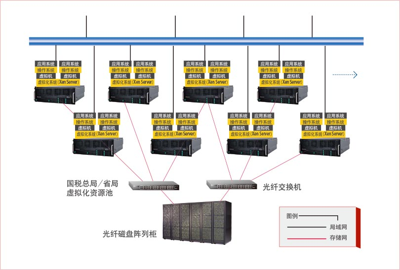
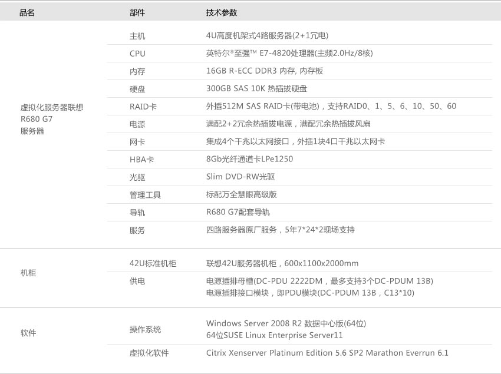

面临IT挑战与期望
随着金税三期工程数据中心建设规模的不断扩大，总局和省局数据中心目前面临着来自业务应用和自身运维方面的6大挑战：
- 交易类系统的业务主要发生在正常工作日周一至周五的9点-12点和15点-18点；核心征管系统80%的业务发生在征收期及月末的最后3天，业务高峰特征明显。一方面需要投入大量资金采购服务器来满足不断增加的业务系统运行，另一方面，高峰期之外的设备利用率不高，造成投入的浪费。
- 交易类系统要求响应等级高、处理时间短，正常工作时间段响应时间不超过5秒，业务高峰期响应时间不超过10秒；传统的服务器高可用(HA)和负载均衡方案带来成本和运维难度的增加。
- 即将淘汰的旧服务器上的应用需快速迁移到新环境下，应用不能中断。
- 业务部门需要快速部署新的应用系统，而开发部门也需要快速为其提供独立的测试环境；传统的设备申请采购模式无法满足部署速度的要求。
- 总局和省局数据中心空间不足，运维人员短缺，运维能力跟不上设备增长的速度。
- 数据中心服务器设备运转的能耗以及空调功耗持续增长，带来运营成本巨大压力。
联想解决方案

根据金税三期计算存储资源项目的建设要求，并针对用户遇到的上述挑战，联想采用了4路x86服务器+Citrix XenServer虚拟化云计算一体化解决方案，通过建立计算存储的虚拟资源池，来帮助用户解决难题和满足业务应用的需求。该方案特点如下：
- 联想采用4路x86服务器R680 G7作为计算资源的硬件平台，该机型最大提供80个逻辑计算内核，1TB的内存空间，以及11个PCI扩展能力，这些强大的硬件资源非常适合服务器基础架构虚拟化的应用。其服务器资源整合比高达1:40，能够较大地提升硬件服务器的利用率和降低设备功耗，降低投入和运营成本。
- 联想R680 G7服务器作为企业级核心应用的高端机型，在可靠性方面采用多项类似小机中使用的RAS技术，极大提供了服务器物理平台的高可用性，减少因宕机对的业务应用影响和运维压力。
- 联想R680 G7服务器作为大型虚拟化的理想机型，与业界主流虚拟化厂商的软件方案有了良好的适用性和兼容能力，100%通过了Vmware 和Citrix厂商的兼容性测试。
- 联想R680 G7服务器作为大型虚拟化的理想机型，与业界主流虚拟化厂商的软件方案有了良好的适用性和兼容能力，100%通过了Vmware 和Citrix厂商的兼容性测试。
客户收益
通过本次联想方案在金税三期计算存储项目的实施，可以给国税总局和省局带来如下直接收益包括：
- 减少硬件投资：由于服务器虚拟化使得多操作系统可以共用硬件，直接导致服务器数量大大减少，可以大大节省购买服务器的投入；其次由于服务器的减少带来的机房空间的节省、网络设备简化等等，可以直接给硬件投资带来了比较大的节省。
- 降低运行成本：硬件的减少降低了硬件的维护和服务费用，再加上采用高可用技术和动态负载均衡技术，带来了运营费用和运维压力的降低，包括：机柜空间、电力消耗、制冷费用、人力成本等等。
- 简化数据中心管理、提高响应能力：数据中心的管理从原来的纵向分割式的多线管理变成了横向统一管理，硬件维护人员专注于总体计算负载提供能力，软件维护人员专注于业务逻辑服务器，服务器的使用和分配更加方便；采用动态数据中心技术后，为逻辑服务器分配计算能力的工作可以自动化完成，大大提高了企业数据中心的响应能力。
- 提高业务连续性和灾备能力：采用服务器虚拟化的高可用技术可以大大提高服务器的业务连续性和灾难备份能力，企业不用再因为服务器维护而终止业务运行，所有的服务器之间都具备了在线备份能力；数据集中管理更加安全，应用灾备也变得更加实时和方便。
方案配置
